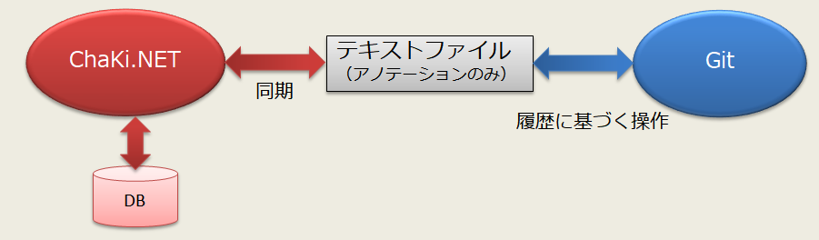
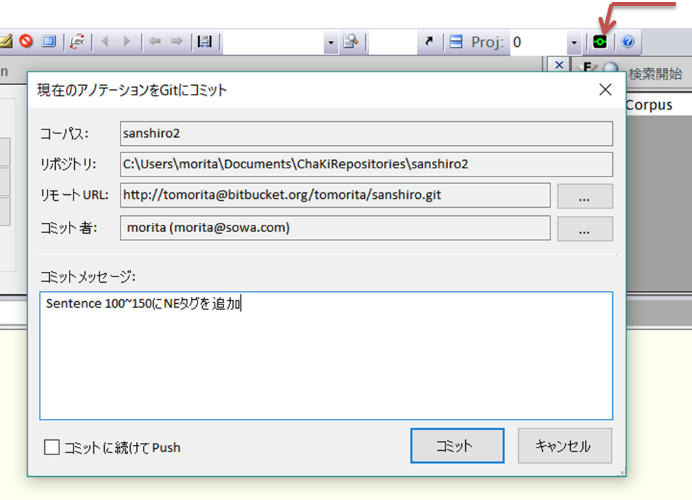

Gitと連携する
Gitはプログラミングの世界でソースコードのバージョン管理システムとして広く普及しているフリーソフトウェアですが、 ChaKiにおいても、簡単な操作によりGitをコーパスアノテーションのバージョン管理手段として用いることができます。 また、GitHubやBitBucketのようなGitをベースとしたオープンソースホスティングサービスを使えば、 アノテーションに不可欠なチーム作業を確立した手法によって適切に管理することも可能となります。
Git連携することによるメリット
- 作業記録（誰が・いつ・何を行ったか）を取る方法がGitにより一元化される（メモ書き、Excel、メールなどによる管理が不要）。
- 作業ファイルとは別にデータをログとして(上書きすることなく積み重ねで）保持するので安全性が増す。
- 記録に基づき、プロジェクト全体のバージョンを過去の任意の時点に安全に戻したり、自由に行ったり来たりすることが可能。
- 作業者単位で個人記録を持つこともできるし、作業者間で記録を共有することもできる。さらに相互チェック・部分取り入れなど 協調作業のサポートもGitまたはホスティングサービスが提供する。
ChaKiのGit連携機能は、技術的にはエクスポート・インポート機能のひとつとして実装されていますので、 機能を導入するためにChaKiに対して複雑なセットアップを行う必要はありません。また、Git連携を使用しなくなった時も 特に何もする必要はなく、そのままデータベースに対する操作を従来通り行うことが可能です。 つまり、「使ってみてやめる」「使用を再開する」ことが低リスクで行えるようになっています。
なお、Git側の操作を行うツール（Gitクライアント）や操作を簡単にするためのGUIツール（フリーソフトウェア）は 別途用意していただく必要があります。
（注意）Git Libraryの制限により、WindowsXPでは本機能は利用できません。
ChaKiにおけるGit連携の方法
ChaKiはコーパスをデータベース内に保管していますが、これをそのままGitの管理対象とするのは扱いやすさの面で 問題があります。その代わりに、アノテーションデータをテキストファイルに1:1にマップし、そのテキストファイルを Gitによりバージョン管理するという構成を取っています。（下図）

Git連携の対象になるのは、以下のコーパスデータです。
- Document
- 文節以外のSegment
- 係り受け以外のLink
- Group
- 以上に付加されているAttribute
以下はバージョン管理の対象とはなりません。
- Sentence(アノテーション対象となる平文)：固定であることが前提となります。
- Project（現状はDefault Projectのみが対象）
- 文節・係り受け情報：大量となり連携速度に影響が大きいため対象外とします。
※ Git連携中に文節・係り受けを編集することはもちろんできますが、単にその変更が記録に含まれないということです。
Gitを用いた作業記録に対する多様な操作（複数作業者の協調や作業記録のブランチ・マージなど）については、 Gitに習熟していただく必要があるとともに、外部のGitツールを活用することをお勧めします。 また、ChaKiは、Gitツールにより行われたリポジトリへの変更結果を忠実に反映する、という形で Gitとの機能分割を行っているため、Git特有の操作に関してはChaKiのサポート外となります。
Git連携の操作
現在のアノテーションを記録する（Commitを行う)
アノテーション作業にある程度区切りがついた時点で、ツールバーの下図赤矢印で示すボタンをクリックすると 図のようなダイアログが表示されます。（コーパスのサイズによっては表示されるまでに時間がかかることがあります。）

「リポジトリ」はChaKiが自動的に用意する、コーパス名に基づいたリポジトリ（.gitという名称のサブフォルダを 含むフォルダ）の名前で、このパスの下にアノテーションデータ（テキストファイル）が置かれます。 （同一名称で異なるコーパスを作成した場合などには現状対応していませんので、コーパス名を変えるなどしてください。） このフォルダを手動で消去すると、Git履歴はなくなります（リモートサーバーを用意して同期していれば、リモートの履歴から 復元することは可能）。 また、そのフォルダ直下にあるテキストファイル("ann"という拡張子を持ちます）に対して手動変更を行うと、 ChaKiが起動中ならばプログラムにより検知され、ユーザーの確認後にアノテーションデータの上書きインポートが行われます。 従って、まだCommitしていないアノテーションがあるときは必ず先にそれをCommitしてください。（そうしないと未記録の アノテーションは失われます。）
「コミット者」にはGitの認識するユーザー（Windowsのユーザーとは無関係）を初回のみ与えます（右の"..."ボタンをクリック）。 通常は名前とメールアドレスを用い、Gitの履歴上で操作者を一意に識別できるようにします。 コミットメッセージ欄に変更内容を入力し、"コミット"ボタンを押せば、Gitに履歴が差分の形で記録されます。
- リモートURLは、複数作業者間でリポジトリを共有する目的でGitのリモートサーバーを用意した場合に指定します。ローカルのみで運用する場合は入力の必要はありません。
- リモートURLを入力している場合、"コミットに続けてPush"チェックボックスをOnにしているとCommitに続いてサーバーへ Push（同期）を行います。
- コンフリクト（変更を加えた箇所が他の作業者による変更と衝突し、自動解決できないこと）が発生した場合は、外部ツールにて 解消した後に再コミットを行います。